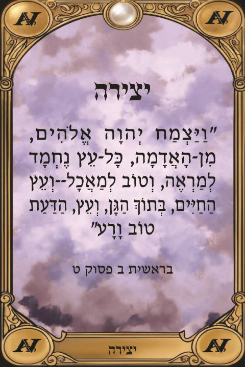

30/72עץ הבריאה
יצירה
וַיַּצְמַח יְהוָה אֱלֹהִים מִן־הָאֲדָמָה כׇּל־עֵץ נֶחְמָד לְמַרְאֶה וְטוֹב לְמַאֲכָל וְעֵץ הַחַיִּים בְּתוֹךְ הַגָּן וְעֵץ הַדַּעַת טוֹב וָרָעבראשית ב, ט
משמעות הקלף
לדעת לא לחשוש מהיצר שלנו כי הוא המנוע ליצירה. ניתן לתעל את היצר לטובת יצירה.